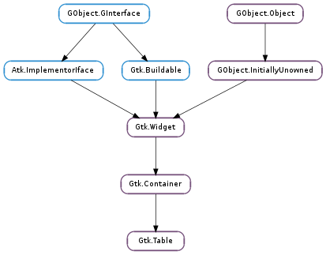

| static | new(rows, columns, homogeneous) |
| attach(child, left_attach, right_attach, top_attach, bottom_attach[, xoptions, yoptions, xpadding, ...]) | |
| attach_defaults(widget, left_attach, right_attach, top_attach, bottom_attach) | |
| get_col_spacing(column) | |
| get_default_col_spacing() | |
| get_default_row_spacing() | |
| get_homogeneous() | |
| get_row_spacing(row) | |
| get_size() | |
| resize(rows, columns) | |
| set_col_spacing(column, spacing) | |
| set_col_spacings(spacing) | |
| set_homogeneous(homogeneous) | |
| set_row_spacing(row, spacing) | |
| set_row_spacings(spacing) |
| Name | Type | Flags | Description |
|---|---|---|---|
| column-spacing | int | r/w | The amount of space between two consecutive columns |
| homogeneous | bool | r/w | If True, the table cells are all the same width/height |
| n-columns | int | r/w | The number of columns in the table |
| n-rows | int | r/w | The number of rows in the table |
| row-spacing | int | r/w | The amount of space between two consecutive rows |
None
| Name | Type | Access |
|---|---|---|
| container | Gtk.Container | r |
Bases: Gtk.Container
The Gtk.Table functions allow the programmer to arrange widgets in rows and columns, making it easy to align many widgets next to each other, horizontally and vertically.
Tables are created with a call to Gtk.Table.new (), the size of which can later be changed with Gtk.Table.resize ().
Widgets can be added to a table using Gtk.Table.attach () or the more convenient (but slightly less flexible) Gtk.Table.attach_defaults ().
To alter the space next to a specific row, use Gtk.Table.set_row_spacing (), and for a column, Gtk.Table.set_col_spacing (). The gaps between all rows or columns can be changed by calling Gtk.Table.set_row_spacings () or Gtk.Table.set_col_spacings () respectively. Note that spacing is added between the children, while padding added by Gtk.Table.attach () is added on either side of the widget it belongs to.
Gtk.Table.set_homogeneous (), can be used to set whether all cells in the table will resize themselves to the size of the largest widget in the table.
Gtk.Table has been deprecated. Use Gtk.Grid instead. It provides the same capabilities as Gtk.Table for arranging widgets in a rectangular grid, but does support height-for-width geometry management.
| Parameters: | |
|---|---|
| Returns: | A pointer to the newly created table widget. |
| Return type: |
Used to create a new table widget. An initial size must be given by specifying how many rows and columns the table should have, although this can be changed later with Gtk.Table.resize (). rows and columns must both be in the range 1 .. 65535. For historical reasons, 0 is accepted as well and is silently interpreted as 1.
| Parameters: |
|
|---|
Adds a widget to a table. The number of ‘cells’ that a widget will occupy is specified by left_attach, right_attach, top_attach and bottom_attach. These each represent the leftmost, rightmost, uppermost and lowest column and row numbers of the table. (Columns and rows are indexed from zero).
To make a button occupy the lower right cell of a 2x2 table, use
gtk_table_attach (table, button,
1, 2, // left, right attach
1, 2, // top, bottom attach
xoptions, yoptions,
xpadding, ypadding);
If you want to make the button span the entire bottom row, use left_attach == 0 and right_attach = 2 instead.
| Parameters: |
|
|---|
As there are many options associated with Gtk.Table.attach (), this convenience function provides the programmer with a means to add children to a table with identical padding and expansion options. The values used for the Gtk.AttachOptions are GTK_EXPAND | GTK_FILL, and the padding is set to 0.
| Parameters: | column (int) – a column in the table, 0 indicates the first column |
|---|---|
| Returns: | the column spacing |
| Return type: | int |
Gets the amount of space between column col, and column col + 1. See Gtk.Table.set_col_spacing ().
| Returns: | the default column spacing |
|---|---|
| Return type: | int |
Gets the default column spacing for the table. This is the spacing that will be used for newly added columns. (See Gtk.Table.set_col_spacings ())
| Returns: | the default row spacing |
|---|---|
| Return type: | int |
Gets the default row spacing for the table. This is the spacing that will be used for newly added rows. (See Gtk.Table.set_row_spacings ())
| Returns: | True if the cells are all constrained to the same size |
|---|---|
| Return type: | bool |
Returns whether the table cells are all constrained to the same width and height. (See gtk_table_set_homogenous ())
| Parameters: | row (int) – a row in the table, 0 indicates the first row |
|---|---|
| Returns: | the row spacing |
| Return type: | int |
Gets the amount of space between row row, and row row + 1. See Gtk.Table.set_row_spacing ().
| Parameters: |
|---|
If you need to change a table’s size after it has been created, this function allows you to do so.
| Parameters: |
|---|
Alters the amount of space between a given table column and the following column.
| Parameters: | spacing (int) – the number of pixels of space to place between every column in the table. |
|---|
Sets the space between every column in table equal to spacing.
| Parameters: | homogeneous (bool) – Set to True to ensure all table cells are the same size. Set to False if this is not your desired behaviour. |
|---|
Changes the homogenous property of table cells, ie. whether all cells are an equal size or not.
| Parameters: |
|---|
Changes the space between a given table row and the subsequent row.